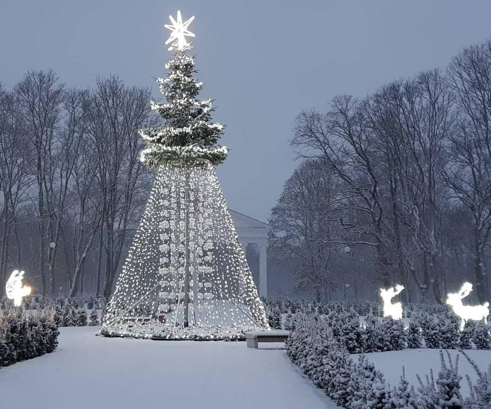

Eglė Kisielienė - Lietuvos nacionalinė Martyno Mažvydo biblioteka
Paslaugos Lankytojui Registracija ir aptarnavimas Mokamos paslaugos Nuotolinės paslaugos Tarpbibliotekinis abonementas Skaityklos Tyrimų centrai Susitikimų kambariai Kūrybos erdvės Dirbtuvės PATS SAU Medijų dirbtuvės Bendradarbystės erdvė Vaikų užimtumo centras „Žaisloteka“ Edukacinės programos Konsultacijos ir mokymai Parodos ir renginiai Fotografavimas ir filmavimas Erdvių renginiams nuoma Parodos bibliotekos parodų erdvėse Kilnojamosios parodos Virtualios parodos Konferencijos Ekskursijos Tiesioginės transliacijos Leidėjui Registracija ir aptarnavimas Apie ISBN, ISMN, ISSN Metodinės rekomendacijos leidybinių duomenų pateikimui Lietuvos spaudos statistika Teisės aktai ir norminiai dokumentai Privalomojo egzemplioriaus pristatymas Naudingos nuorodos Bibliotekininkui Bibliotekų statistika Profesinė edukacija. Konsultacijos Norminiai ir teisės dokumentai Nenustatytų teisių turėtojų kūriniai Profesiniai informacijos ištekliai Atlikti tyrimai Atradimai Katalogai LNB elektroninis katalogas (leidinių užsakymas) LIBIS suvestinis katalogas Nacionalinės bibliografijos duomenų bankas LNB kortelių vaizdų katalogas Katalogas „Lietuvos leidėjai“ Bibliografinė LT periodinės spaudos straipsnių bazė Užsienio šalių nacionalinės bibliografijos Duomenų bazės Lietuvos Užsienio Elektroniniai periodiniai leidiniai Atvirosios prieigos ištekliai E. paveldas Europeana Leidiniai Nacionalinės bibliografijos leidiniai Kiti leidiniai Įsigykite El. knygos portale ibiblioteka.lt Kiti ištekliai Judaikos tyrimų centro tinklaraštis Lituani(sti)ka Proveniencijos Bibliografinė duomenų bazė „Žymūs Lietuvos žmonės“ Senoji plokštelė Įdomybės Apie biblioteką Veiklos sritys Misija ir tikslai Veiklos dokumentai Partnerystė Administracinė informacija Nuostatai Planavimo dokumentai Darbo užmokestis Biudžeto vykdymo ataskaitų rinkiniai Finansinių ataskaitų rinkiniai Viešieji pirkimai Tarnybiniai lengvieji automobiliai Korupcijos prevencija Asmens duomenų apsauga Atviri duomenys Bendra informacija Struktūra ir kontaktai Teisinė informacija Karjera ir žmogiškųjų išteklių politika Savanorystė Istorija Rekonstrukcija Darbo laikas Programos ir projektai Edukacijos, parodos ir renginiai Tyrimai ir leidyba Elektroninės paslaugos Infrastruktūros atnaujinimas Darbuotojų kvalifikacijos kėlimas Paslaugos Lankytojui Registracija ir aptarnavimas Mokamos paslaugos Nuotolinės paslaugos Tarpbibliotekinis abonementas Skaityklos Tyrimų centrai Susitikimų kambariai Kūrybos erdvės Dirbtuvės PATS SAU Medijų dirbtuvės Bendradarbystės erdvė Vaikų užimtumo centras „Žaisloteka“ Edukacinės programos Konsultacijos ir mokymai Parodos ir renginiai Fotografavimas ir filmavimas Erdvių renginiams nuoma Parodos bibliotekos parodų erdvėse Kilnojamosios parodos Virtualios parodos Konferencijos Ekskursijos Tiesioginės transliacijos Leidėjui Registracija ir aptarnavimas Apie ISBN, ISMN, ISSN Metodinės rekomendacijos leidybinių duomenų pateikimui Lietuvos spaudos statistika Teisės aktai ir norminiai dokumentai Privalomojo egzemplioriaus pristatymas Naudingos nuorodos Bibliotekininkui Bibliotekų statistika Profesinė edukacija. Konsultacijos Norminiai ir teisės dokumentai Nenustatytų teisių turėtojų kūriniai Profesiniai informacijos ištekliai Atlikti tyrimai Atradimai Katalogai LNB elektroninis katalogas (leidinių užsakymas) LIBIS suvestinis katalogas Nacionalinės bibliografijos duomenų bankas LNB kortelių vaizdų katalogas Katalogas „Lietuvos leidėjai“ Bibliografinė LT periodinės spaudos straipsnių bazė Užsienio šalių nacionalinės bibliografijos Duomenų bazės Lietuvos Užsienio Elektroniniai periodiniai leidiniai Atvirosios prieigos ištekliai E. paveldas Europeana Leidiniai Nacionalinės bibliografijos leidiniai Kiti leidiniai Įsigykite El. knygos portale ibiblioteka.lt Kiti ištekliai Judaikos tyrimų centro tinklaraštis Lituani(sti)ka Proveniencijos Bibliografinė duomenų bazė „Žymūs Lietuvos žmonės“ Senoji plokštelė Įdomybės Apie biblioteką Veiklos sritys Misija ir tikslai Veiklos dokumentai Partnerystė Administracinė informacija Nuostatai Planavimo dokumentai Darbo užmokestis Biudžeto vykdymo ataskaitų rinkiniai Finansinių ataskaitų rinkiniai Viešieji pirkimai Tarnybiniai lengvieji automobiliai Korupcijos prevencija Asmens duomenų apsauga Atviri duomenys Bendra informacija Struktūra ir kontaktai Teisinė informacija Karjera ir žmogiškųjų išteklių politika Savanorystė Istorija Rekonstrukcija Darbo laikas Programos ir projektai Edukacijos, parodos ir renginiai Tyrimai ir leidyba Elektroninės paslaugos Infrastruktūros atnaujinimas Darbuotojų kvalifikacijos kėlimas Kontaktai Informacijos išteklių departamentas Bibliotekos fondo plėtros skyrius Eglė Kisielienė
Eglė Kisielienė
Bibliotekininkė
Kab.: 117Tel. (8 5) 239 8611 Tel. (vidaus) 8611
SPECIALIEJI REIKALAVIMAI
Asmuo, pretenduojantis užimti bibliotekininko pareigas, turi atitikti šiuos kvalifikacinius reikalavimus:
turėti ne žemesnį kaip aukštąjį koleginį (aukštesnįjį, įgyta iki 2009 metų, ar specialųjį vidurinį, įgytą iki 1995 metų) išsilavinimą humanitarinių ar socialinių mokslų srityje; profesinė darbo patirtis atminties institucijose – privalumas; labai gerai mokėti valstybinę kalbą; mokėti savarankiškai kaupti, sisteminti, analizuoti ir pateikti informaciją, rengti išvadas ir pasiūlymus; gebėti savarankiškai planuoti, organizuoti savo veiklą; mokėti bent vieną užsienio kalbą ne žemesniu kaip A1 lygiu; turėti gerus darbo kompiuteriu bei biuro įranga įgūdžius, mokėti dirbti Microsoft Office programomis.FUNKCIJOS
Bibliotekininkas vykdo šias funkcijas:
vykdo einamojo ir retrospektyvaus laikotarpio serialinių leidinių (privalomasis egzempliorius, prenumerata, mainai, parama, rekatalogavimas) registravimą, šifravimą, jų apskaitą; tvarko prenumeruojamų Lietuvos serialinių dokumentų užsakymo duomenis elektroniniame kataloge, suformuoja užsakymus; tikslina ir redaguoja Nacionalinės bibliotekos elektroniniame kataloge rekataloguojamų serialinių leidinų metaduomenis; reikalui esant, apie tai informuoja įrašus įvedančius ir papildančius Nacionalinės bibliotekos padalinius; vykdo prenumeruojamų serialinių leidinių trūkumų išieškojimą iš tiekėjų; priima Nacionalinės bibliotekos korespondenciją ir ją paskirsto adresatams; vykdo kitas Nacionalinės bibliotekos dokumentų apskaitos funkcijas; dalyvauja projektuose, susijusiuose su Nacionalinės bibliotekos fondo vystymu; rengia ir teikia ataskaitas apie savo vykdomą veiklą Skyriaus vadovui; atlieka kitus Skyriaus vadovo pavedimus, susijusius su šiame Skyriuje vykdomomis funkcijomis. Atnaujinta: 2020 m. rugsėjo 9 d. Spalis P A T K Pn Š S 28 29 30 1 2 3 4 5 6 7 8 9 10 11 12 13 14 15 16 17 18 19 20 21 22 23 24 25 26 27 28 29 30 31 1Artimiausi renginiai
2020 m. spalio 27 d. 08:45 –15:30 Nemokami skaitmeninio raštingumo mokymai suaugusiesiems „Sumaniau apsipirkime ir atsiskaitykime internetu“ 2020 m. spalio 28 d. 17:30 Nacionalinėje bibliotekoje – muzikologo V. Gerulaičio paskaitų ciklas apie L. van Beethoveną 2020 m. spalio 28 d. 17:30 Adamo Zamoyskio knygos „Lenkijos istorija“ sutiktuvės 2020 m. spalio 28 d. 18:00 Vilniaus Gaono metų knygos. Dviejų Aušros Pažėraitės knygų pristatymasParodos
2020 m. sausio 1 d. – gruodžio 31 d. Jolitos Vaitkutės instaliacija „Pabudę iš knygų“ 2020 m. rugsėjo 22 d. – lapkričio 22 d. Nacionalinės bibliotekos darbuotojų kūrybos paroda 2020 m. spalio 23 d. – spalio 30 d. Paroda apie klaidinančią informaciją „The Glass Room“ 2020 m. spalio 12 d. – lapkričio 7 d. Paroda „Laisvės siekio vedami…“ 2020 m. spalio 20 d. – gruodžio 31 d. Paroda „Shenot Eliyahu / Elijo metai: Vilniaus Gaono įtaka Lietuvos žydų kultūrai“ 2020 m. spalio 6 d. – spalio 30 d. Paroda „Teisė ir pareiga: Lietuvos Respublikos Seimo rinkimai 1920–1940 m.“ 2020 m. spalio 5 d. – lapkričio 8 d. Vieno eksponato paroda „Pirmasis istorinis nuotykinis romanas lietuvių kalba“Kinas
2020 m. lapkričio 7 d. 14:00 Vaidybinio filmo „Purpurinis rūkas“ peržiūra
Naudinga informacija
DUK Kontaktai Atsiliepimai ir pasiūlymai Nuorodos Elektroniniai valdžios vartai Senoji svetainėNaujienų prenumerata
Kontaktai
Gedimino pr. 51, LT-01109 Vilnius Kaip mus rasti? Darbo laikasI–V 8.00–21.00 val.
VI–VII 10.00–18.00 val.
Nacionalinė biblioteka nedirba valstybinių švenčių dienomis Informacija (8 5) 249 7028
Registracija (8 5) 249 7013 El. p. biblio@lnb.lt
2020 © Biudžetinė įstaiga, Gedimino pr. 51 , LT-01109 Vilnius, tel. (8 5) 249 7023, el. p. biblio@lnb.lt
Duomenys kaupiami ir saugomi Juridinių asmenų registre, kodas 290757560. PVM mokėtojo kodas LT100000031710
Slapukų politika │ Autorių teisės. Publikuojamų duomenų naudojimas
Sprendimas: INSOFT